🚀 Aula 2 - Algoritmos e formas de representação
Todos os dias, nós nos deparamos com problemas a serem resolvidos, como por exemplo: Qual o melhor caminho da sua casa até a faculdade? Para encontrar o melhor caminho, diferentes estratégias poderiam ser definidas.
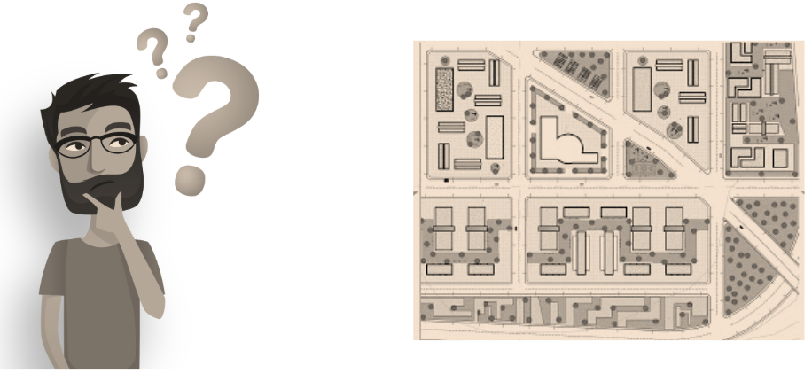
Algumas pessoas poderiam utilizar um mapa e calcular a distância total a ser percorrida pelos caminhos possíveis e determinar o caminho mais curto. Outras pessoas iriam verificar informações como tráfego de carros e custo de pedágios para determinar o caminho mais rápido e/ou mais barato.
Enfim, o que irá determinar se o caminho escolhido é bom ou ruim, será a sua necessidade naquele momento. Você sabia que o conjunto de passos para resolver um certo problema ou realizar uma determinada tarefa chama-se algoritmo? E que eles são importantíssimos para a programação de computadores?
🛠️ ALGORITMOS
Um algoritmo é a especificação de uma sequência ordenada de instruções, finitas e não-ambíguas, que deve ser seguida para a solução de um determinado problema, garantindo sua repetibilidade. Aplicamos o conceito de algoritmos sempre que estabelecemos um planejamento mental para realizar uma determinada tarefa, considerando que deveremos executar um conjunto de passos até atingir o objetivo desejado. São exemplos de algoritmos no dia a dia:
- 🍳 Receitas culinárias
- 📖 Manuais de instrução
- 🎬 Roteiros para realização de tarefas específicas
Em geral, existem muitas maneiras de resolver o mesmo problema. Assim, ao criarmos um algoritmo, indicamos uma dentre várias possíveis sequências de passos para solucionar o problema. O algoritmo é utilizado como uma ferramenta para encontrar uma maneira correta e clara de descrever uma situação, para que posteriormente possa ser resolvida no computador.
Para que um computador possa desempenhar uma tarefa é necessário que esta seja detalhada, passo a passo, em uma linguagem compreensível pela máquina, por meio de um programa. Um programa de computador é um algoritmo escrito em um formato compreensível pelo computador. Ao criarmos um algoritmo, nós devemos garantir que ele possua as seguintes propriedades essenciais:
- Completo: todas as ações precisam ser descritas e devem ser únicas.
- Sem redundância: um conjunto de instruções só pode ter uma única forma de ser interpretada.
- Determinístico: se as instruções forem executadas, o resultado esperado será sempre atingido.
- Finito: as instruções precisam terminar após um número limitado de passos.
📌 FUNCIONAMENTO DOS ALGORITMOS
Durante o processo de construção de um algoritmo deve-se definir 3 etapas principais, sendo estas: Entrada (Fase 1), Processamento (Fase 2) e Saída (Fase 3). Na imagem abaixo serão apresentadas cada uma das etapas bem como suas definições.
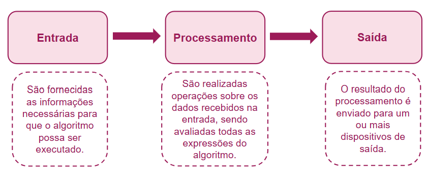
Para ilustrar o processo de construção de algoritmos e como executar cada uma das 3 etapas principais, observe e reflita sobre a situação-problema 1 e 2 que são apresentadas a seguir:
Ana é uma jovem universitária que mora atualmente sozinha e como passa muito tempo na faculdade acaba preparando pratos rápidos na cozinha. Deseja preparar uma omelete para o jantar e possui os seguintes ingredientes em casa: 2 ovos, sal, presunto, queijo e tempero verde. Como Ana poderia criar um algoritmo para auxiliá-la na tarefa de preparar uma omelete?
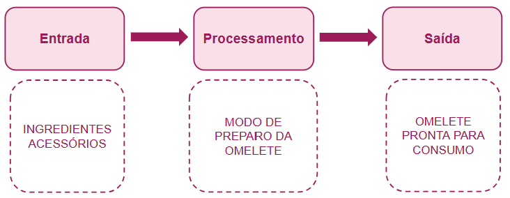
Maria investiu suas economias em uma banca de revistas em quadrinhos que fica localizada no centro da cidade. Pretende organizar as publicações nas 5 estantes da banca para melhorar o atendimento. Nos primeiros meses, percebeu que os seus clientes costumam comprar as edições com base nos seguintes gêneros: fantasia, terror, comédia, romance e super-heróis. Qual a sequência de passos que Maria deve executar para conseguir organizar a sua banca de revistas em quadrinhos?
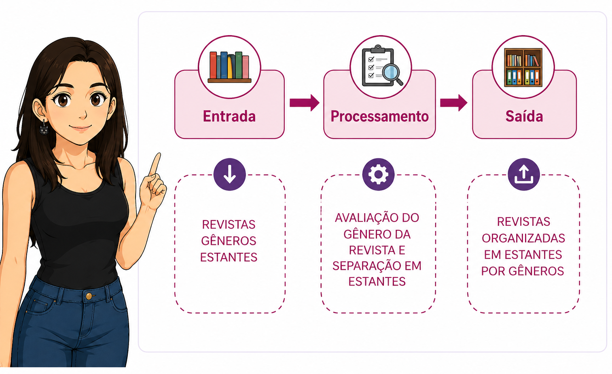
Com base no processo de construção de algoritmos visto até aqui, nós podemos concluir que as operações precisam ser as mais simples possíveis para que o computador possa executá-las de maneira exata e em um tempo finito.
📝 FORMAS DE REPRESENTAÇÃO DE ALGORITMOS
Existem algumas formas de representação de algoritmos computacionais na literatura, sendo as 3 principais: Descrição narrativa, Fluxograma e o Portugol.
DESCRIÇÃO NARRATIVA
É uma forma de representação considerada simples e fácil de utilizar, pois os algoritmos são escritos em linguagem natural (português, entre outras), com a qual já temos contato no nosso dia a dia, sendo uma vantagem em relação a uma linguagem que não tem um uso frequente no nosso cotidiano.
Mas ela é um tipo pouco utilizado, pois muitas vezes uma palavra pode ter muitos significados, dependendo do contexto no qual são utilizadas, gerando assim ambiguidades e imprecisões. Em comparação com a linguagem de programação, a linguagem natural é abstrata, imprecisa e pouco confiável. Isso poderia trazer problemas na hora de transcrever o algoritmo para o programa.
Ana é uma jovem universitária que mora atualmente sozinha e como passa muito tempo na faculdade acaba preparando pratos rápidos na cozinha. Deseja preparar uma omelete para o jantar e possui os seguintes ingredientes em casa: 2 ovos, sal, presunto, queijo e tempero verde. Como Ana poderia criar um algoritmo para auxiliá-la na tarefa de preparar uma omelete?
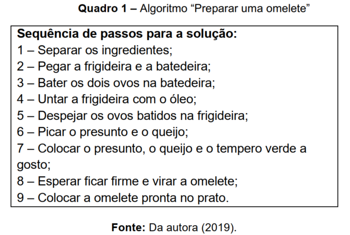
- teste
Maria investiu suas economias em uma banca de revistas em quadrinhos que fica localizada no centro da cidade. Pretende organizar as publicações nas 5 estantes da banca para melhorar o atendimento. Nos primeiros meses, percebeu que os seus clientes costumam comprar as edições com base nos seguintes gêneros: fantasia, terror, comédia, romance e super-heróis. Qual a sequência de passos que Maria deve executar para conseguir organizar a sua banca de revistas em quadrinhos?
📌 FLUXOGRAMA
- É conhecida na literatura também como Diagrama de Fluxo ou Diagrama de Bloco. São utilizadas formas geométricas padronizadas para descrever a sequência de passos a serem executados pelo algoritmo. Essa forma diferentemente da descrição narrativa não permite ambiguidade ou imprecisão.
📌 FLUXOGRAMA
- Os fluxogramas são muito utilizados na criação dos algoritmos, pois um diagrama pode substituir várias palavras, permitindo uma melhor organização, compreensão e visualização dos passos a serem seguidos. Nesse tipo de concepção, as formas geométricas padronizadas são ligadas por setas de fluxo para indicar as diversas instruções e decisões que devem ser as mais seguidas com o objetivo de resolver o problema em questão.
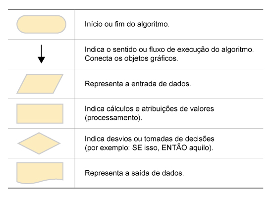
📌 FLUXOGRAMA
📌 FLUXOGRAMA
Já as desvantagens são as seguintes: os dados podem não ser suficientemente detalhados, dificultando, assim, a transcrição do algoritmo para o programa a ser desenvolvido; é necessário aprender a simbologia dos fluxogramas; e, para algoritmos mais extensos, a construção do fluxograma pode se tornar mais complicada.
📌 SITUAÇÃO-PROBLEMA 01
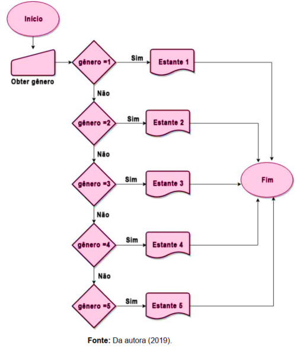
📌 SITUAÇÃO-PROBLEMA 02
📌 PORTUGOL
- O Português Estruturado, também conhecido na literatura como Portugol, Pseudocódigo ou Pseudolinguagem, é uma ferramenta muito utilizada para o ensino de lógica de programação para iniciantes. Essa forma de representação de algoritmos utiliza uma linguagem intermediária entre a linguagem natural (português, entre outras) e uma linguagem de programação (C, Java, Python, entre outras) para descrever os algoritmos.
📌 PORTUGOL
- O Portugol possui uma linguagem bastante simplificada, entretanto, ele possui todos os elementos básicos e uma estrutura semelhante a de uma linguagem de programação de computadores. Na disciplina de Algoritmo e Lógica de Programação iremos utilizar uma ferramenta chamada VisualG para construir e testar os algoritmos criados em Portugol.
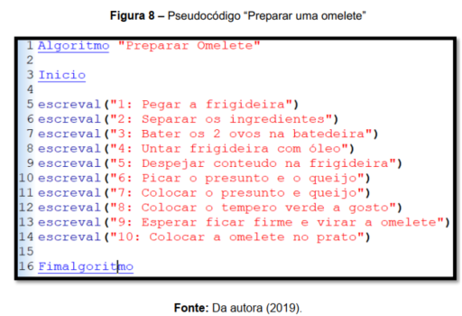
📌 SITUAÇÃO-PROBLEMA 01
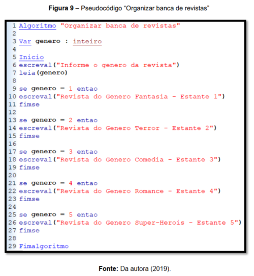
📌 SITUAÇÃO-PROBLEMA 02
📌 PORTUGOL
- O Portugol possui algumas desvantagens, como: precisamos aprender as regras dessa forma de representação. Além disso, não há uma padronização de sua estruturação na literatura, isso quer dizer que, você encontrará um mesmo termo descrito de formas diferentes.
🧪 FIXAÇÃO – FAÇAMOS JUNTOS!
🧪 PRATIQUE 01
Faça um algoritmo para a tarefa "Preparar miojo" e represente a sua solução utilizando os conceitos de "Fluxograma" e "Descrição narrativa".
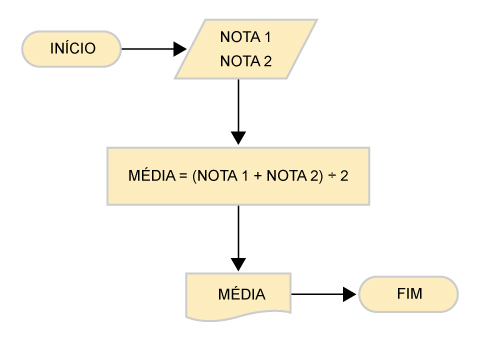
🧪 PRATIQUE 02
Faça um algoritmo para a tarefa "Calcular média" utilizando a forma de representação "Português Estruturado". Para isso, utilize como base o funcionamento descrito no fluxograma ao lado.
🧪 FIXAÇÃO – FAÇA VOCÊ MESMO!
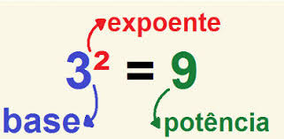
🧪 PRATIQUE 01
Faça um algoritmo utilizando o "Pseudocódigo" para ler dois valores (x e y), calcular e mostrar x elevado a potência de y.
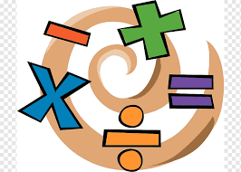
🧪 PRATIQUE 02
Faça um algoritmo utilizando o "Pseudocódigo" que leia dois números reais e em seguida mostre: a soma, o produto, a divisão e a subtração entre eles.